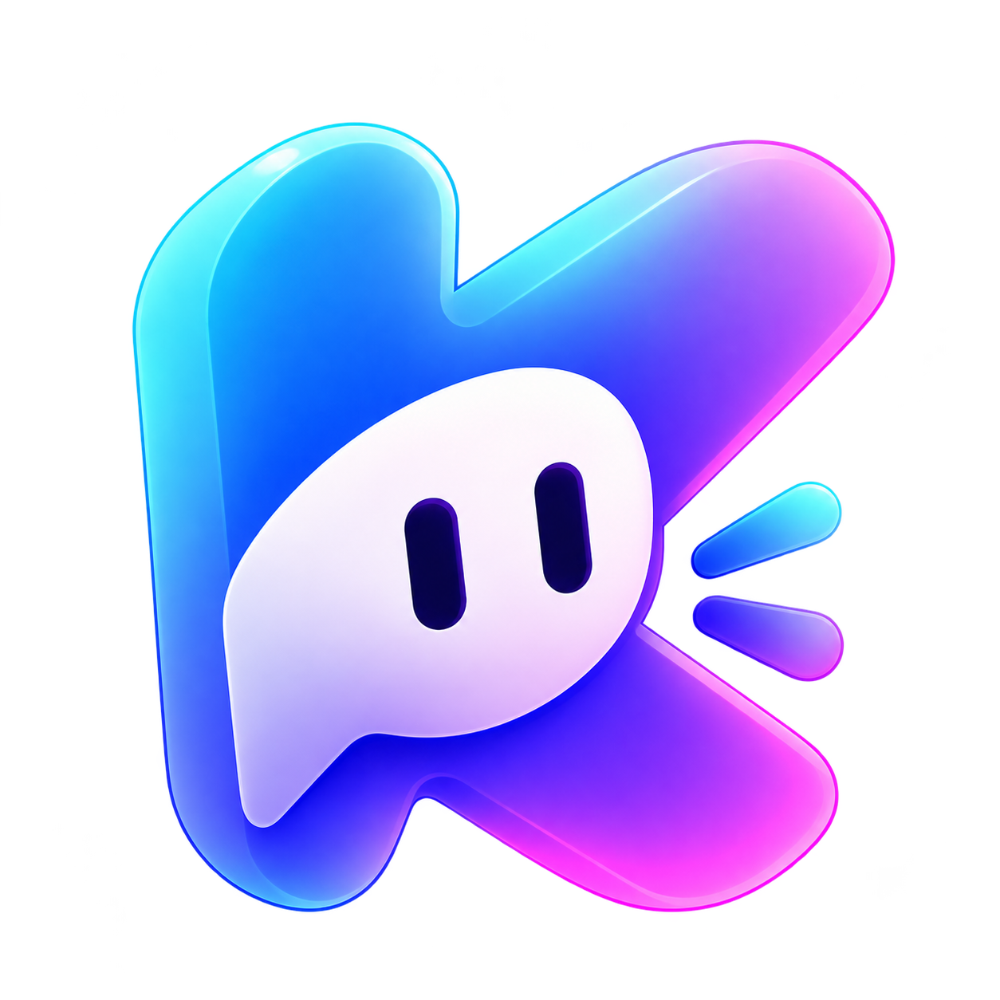
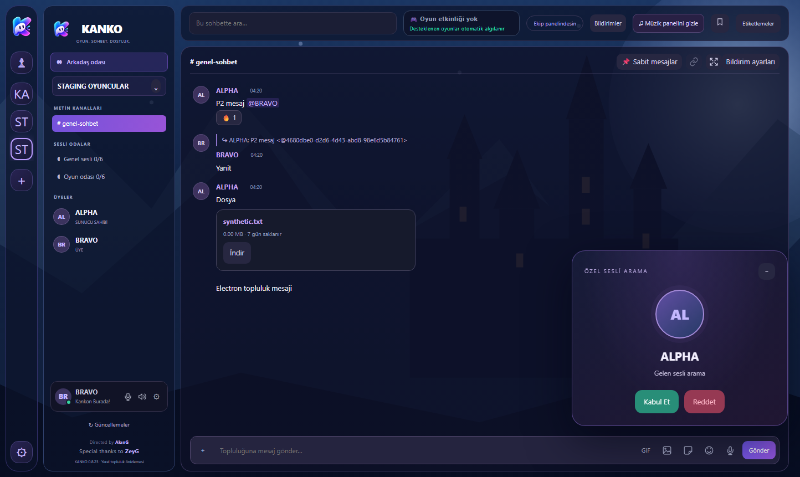
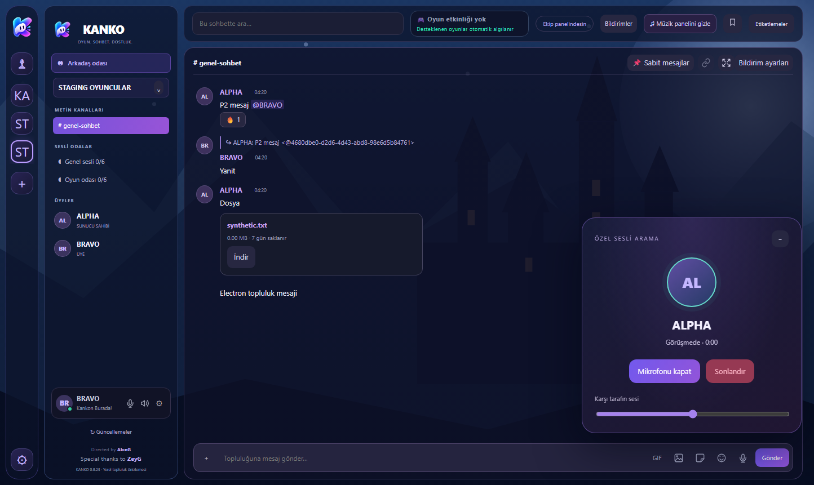
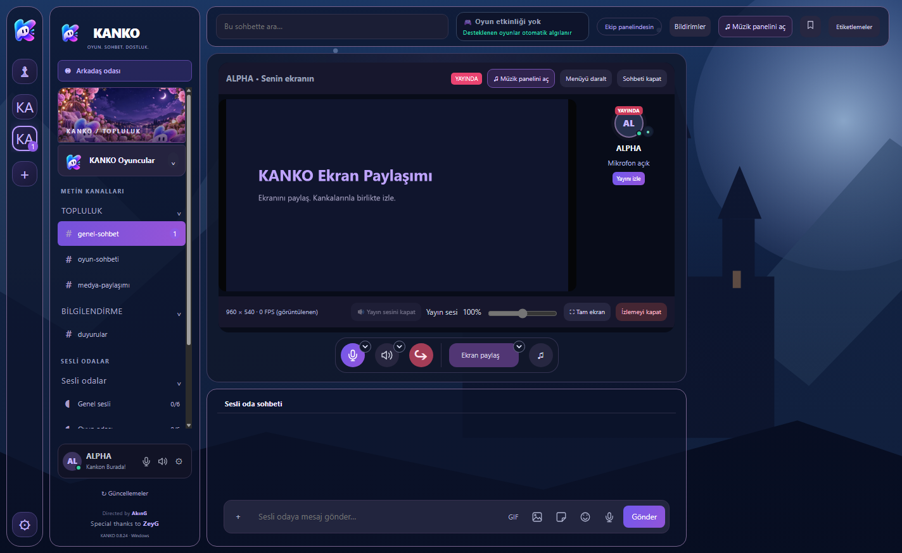
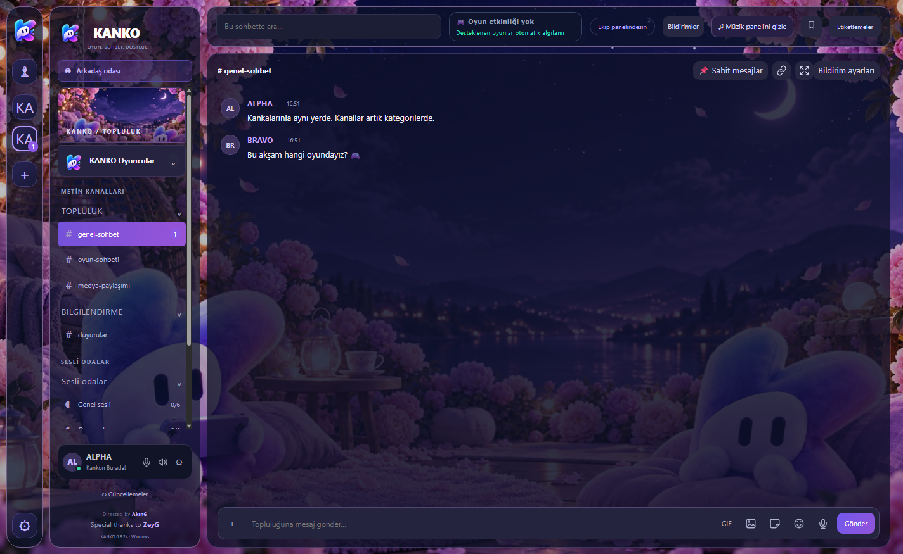
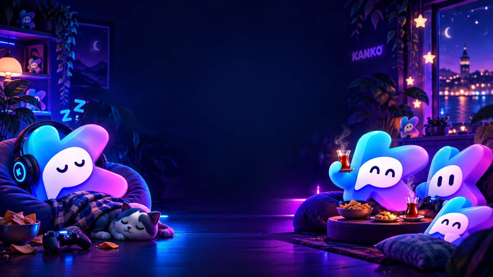

Mesafe var.
Arada sessizlik yok.
Topluluğunu oluştur, davet bağlantını paylaş. Metin kanalları, sesli odalar ve topluluğa özel rollerle ekibini bir arada tut.

KANKOKANKO’yu indirOyun bitse de sohbet bitmez.
Sesini aç, ekranını paylaş, sevdiğin şarkıyı sıraya ekle.
Topluluk kanalları ve özel sesli aramalarla kankaların burada.
Windows masaüstü uygulaması · v0.8.29
Gerçek Electron uygulamasından alınmış yerel geliştirme görüntüleri. Yalnız sentetik test hesapları kullanılmıştır.



BİRLİKTE DAHA İYİ
Oyun gecesinden günlük muhabbete.
İhtiyacın olanlar, aynı yerde.
Topluluğunu oluştur, davet bağlantını paylaş. Metin kanalları, sesli odalar ve topluluğa özel rollerle ekibini bir arada tut.
Oyununu ya da ekranını odadakilerle paylaş. Arkadaşının yayınını aç ve beraber izlemeye devam et.
Topluluğunu oluştur, ayrı metin ve ses kanallarında buluş. Arkadaşlarınla özelden mesajlaş veya birebir sesli arama başlat.
YouTube’da şarkı ara, sıraya ekle ve odada birlikte dinle. Oynat, duraklat, sıradakine geç; sesini kendine göre ayarla.
OYUNDAYKEN DE BİRLİKTE
Desteklenen Windows oyunları algılandığında oyun durumunu profilinde gösterebilirsin. Görünürlüğü ayarlardan kontrol edersin.
İstemci / oyun durumu
Oyunda
Oyunda
DURUMUN DA SENİN GİBİ OLSUN
Her an konuşacak hâlin olmayabilir.
Kankaların nasıl olduğunu bir bakışta anlasın.
Etiketlere dokun, kendi frekansını seç.
BULUŞMAK BU KADAR KOLAY
Windows uygulamasını bilgisayarına kur.
Davet bağlantısını arkadaşlarına gönder.
Konuş, ekranını paylaş, birlikte müzik dinle.
WINDOWS UYGULAMASINDA
KANKO’da bugün kullanabileceğin özellikler.

Görsele dokun, temayı tam boyutta incele.

Kalıcı ses odaları, davet bağlantıları, arkadaş istekleri ve özel mesajlar. Kısa bağlantı kesintilerinde otomatik yeniden katılma.
Katılımcı kartından yayını aç; geniş izleme veya tam ekran kullan. Yayın sesi ve paylaşım kalitesini ayarla.
Sağdaki panelden YouTube’da şarkı ara, kuyruğa ekle, oynat veya duraklat; önceki ve sonraki şarkıya geç. Paneli gizlesen de müzik devam eder.
Oda sohbetinde veya özel mesajlarda yazış, fotoğraf ve dosya gönder, ses kaydı paylaş. Sohbet geçmişini gerektiğinde temizle.
Giriş/çıkış cihazı, mikrofon giriş düzeyi ve kişisel ses kontrolleri. Arkadaşını sessize al veya sesini %0–200 arasında ayarla; tercihler kaydedilir.
Profil fotoğrafı, hareketli görseller, banner ve çerçeveler; durum etiketleri, hazır temalar ve kendi arka planını yükleme.
Soundboard ses efektleri, kişisel efekt ses düzeyi ve odaya katılma/ayrılma bildirim sesleri.
Desteklenen Windows oyunları otomatik algılanır. Oynadığın oyunu uygulamada göster; algılama oyuna göre değişebilir.
Yeni sürüm bildirimi, uygulama içinde sürüm notları ve indirip yeniden başlatma akışı. Windows güncellemeleri uygulama üzerinden alınır.
Kankalarınla her yerde aynı frekansta.
Oyun. Sohbet. Dostluk.01 / SESLİ ODA
02 / ARKADAŞ SOHBETİ
♫ Şarkı kuyruğun
♫ Birlikte dinleme
03 / KANKOMÜZİKBOT
Mobil tasarım konsepti · Mobil sürüm henüz yayımlanmadı.
Bu maketler gerçek mobil uygulama ekran görüntüsü değildir.
Profil fotoğrafları, banner ve çerçeveler, durum etiketleri, kişiselleştirme ve bildirim ayarları. Ekran paylaşımı cihaz desteğine bağlıdır. Çıkış tarihi ve desteklenen platformlar daha sonra duyurulacak.
AKLINDA KALMASIN
İlk buluşmadan önce
merak edebileceklerin.
KANKO şu anda Windows masaüstü uygulaması olarak sunuluyor. Bu siteyi telefonundan da inceleyebilirsin; mobil uygulama indirmesi sunmuyoruz.
Uygulamada bir oda oluşturup davet bağlantısını kopyalayarak arkadaşlarına gönderebilirsin. Arkadaşlarının da Windows uygulamasını kurması gerekir.
Odaya katıldıktan sonra KANKOMÜZİKBOT panelindeki YouTube arama alanından şarkı bulup sıraya ekleyebilirsin. Oynatma kontrolleri ve kişisel ses ayarı panelde bulunur. YouTube kaynaklı erişim ve oynatma sınırlamaları geçerlidir.
İndirme butonu, geliştiricinin GitHub Releases sayfasında yayımlanan en son yayımlanmış KANKO Windows kurulum dosyasına gider. Yenilikleri aşağıdaki sürüm notları penceresinden görebilirsin.
Uygulamadaki Güncellemeler bölümünden yeni sürümleri kontrol edebilirsin. İndirilen güncelleme uygulama yeniden başlatıldığında yüklenir.
OYUN. SOHBET. DOSTLUK.
Bir oda aç. Kankalarını çağır. İyi vakit geçir.
⊞ Windows için KANKO’yu İndir